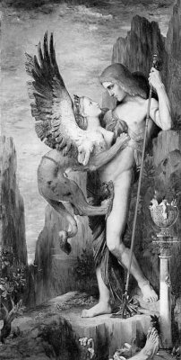
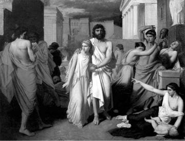

Tebai kraliçesi İokaste, hiç de hayra yormadığı bir düş gördü gebeliği sırasında... Kocası kral Layos'la (Laios) birlikte bu düşü yorumlaması için ünlü bilici kör Teyresyas'a (Teiresias) başvurdular. Bilici, 'doğacak çocuğun öz babasını öldüreceğini ve kraliçe olan annesiyle evleneceğini' söyledi! Haliyle bu sözleri duyunca kral ve kraliçe, tepeden tırnağa ürperdiler... Bu yüzden de bir süre sonra bebekleri doğar doğmaz, ayak bileklerini deldiler ve içleri yana yana bir dağ başına bırakıp geldiler!..
Bebeği bulan bir çoban da onu kucakladığı gibi Korintos kralının sarayına götürüp ilgililere teslim etti. Çünkü bu kralın hiç çocuğu olmadığını duymuştu çoban... Kral ve kraliçe, bu buluntu bebeğe "ayakları şiş" anlamına gelen "Oidipus" adını verdiler ve onu öz çocuklarıymış gibi özenle, el bebek gül bebek büyüttüler...
Artık delikanlı olduğunda bir gün, kralın öz oğlu olmadığı yollu bir dedikodu çalındı Oidipus'un kulağına... Çok üzüldü. Gerçeği öğrenmek için Delfoy kentindeki ünlü bilici Teyresyas'ın yanına gitti... Teyresyas, prens Oidipus'a bu konuda bir şey söylemek istemedi ilkin. Ne var ki prens üsteleyince, 'babasını öldürüp anasıyla evleneceğini' söyledi. Böylesi bir uzgörüden çarpılmışçasına etkilenen Oidipus Korintos'taki saraya dönmek istemedi artık... "Babasını öldürüp anasıyla evlenmek" gibi tanrıların çizdiği olası bir yazgıyı beklemektense; başka bir ülkeye, bilinmeyen ve tanınmayan biri olarak sığınmanın daha doğru olacağını düşündü... Böylece bir anlamda tanrılara da haklı olarak isyan etmiş olacaktı!.. Bu yüzden komşu ülke Tebai'ye doğru yola koyuldu...
Yolu üstündeki dar bir geçide girdiğinde, içinde iki adamın bulunduğu bir arabayla karşılaştı. Aralarında kimin kenara çekilip ötekine yol vereceği konusunda çıkan anlamsız bir kavga sonunda Oidipus bu iki adamı öldürüp Tebai'ye doğru yoluna devam etti...
O sıralarda Tebai sınırındaki bir tepede oturan Sfinks (Sphinks) adlı aslan bedenli, kadın yüzlü bir canavar; sınırı geçmek isteyene bir bilmece sormakta, bilemeyince de onu öldürmekteydi! Bu yüzden Tebaililer de, Sfinks yüzünden kilitlenen kentlerinden artık çıkamaz olmuşlar; evlerine, sokaklarına kapanmak zorunda kalmışlardı. Tebaili köylüler ve kentliler, tarlalarına ya da iş yerlerine gidip gelemeyince de ülkede büyük bir kıtlık, yer yer açlık başlamıştı...

Oidipus ve Sfinks
Oidipus, Tebai krallığının sınırından geçerken, o aslan bedenli Sfinks denen canavar, hemen kayalıklardan inip yakasına yapıştı: "Söyle bakalım ey yabancı," diye başladı. "Hangi yaratığın sabahleyin dört, öğleyin iki, akşamleyin de üç ayağı olur?" Oidipus biraz düşündükten sonra; "İnsan denen yaratığın..." yanıtını verdi. Sfinks kulaklarına inanamadı. Neden?" diye sordu hemen. Oidipus da; "Çünkü insan çocukken elleriyle ayaklarıyla emekler; dört ayaklı olur. Büyüdüğü zaman dimdik, iki ayağı üstünde yürür; haliyle iki ayaklı olur. Yaşlanınca bir de değnek alır eline, öyle yürür... Üç ayaklı olur!" şeklinde bir açıklama getirdi... Sfinks öfkeden kuduracak gibiydi... Ama hemen yeni bir soru attı ortaya: "İki kız kardeş vardı. Biri ötekini doğurmuştu. Peki kimdi bunlar?" Fazla düşünmeden; "Gündüz ile Gece!" yanıtını verdi Oidipus... İlk kez hiç beklemediği doğru yanıtlar almanın öfkesiyle Sfinks, hemen o yüksek kayalığın tepesine tırmandı ve bütün hışmıyla kendini aşağıdaki boşluğa bırakıverdi. Sfinks, düştüğü yerde paramparça oldu...
Böylece büyük bir beladan kurtulan Tebaililer, Oidipus'u dile gelmez bir coşkuyla karşılayıp gece gündüz bayram ettiler. Tebai kral vekili Kreon da; bir süre önce öldürüldüğü için geçici olarak oturduğu kral Layos'un tahtını ve dul kalan kraliçe İokaste'yi ödül olarak sundu kahraman Oidipus'a!.. Artık Tebai kralı olan Oidipus da dul kraliçe İokaste'yle evlendi. Bu evlilikten iki oğluyla iki kızı oldu. Kızlarından biri de, yalnız antikçağın değil, bütün çağların ölümsüz prensesi o soylu ve inatçı güzel Antigone'ydi!..

Antigone, babası Oidipus'la birlikte sığınacak bir ülke ararken
Oidipus'un krallığı sırasında halk, barış ve bolluk içinde yaşamaya başladı... Çünkü Oidipus savaşı insanlık dışı bulduğundan, sürekli barışı öneren çok iyi yürekli bir kraldı. Tek düşüncesi de yurttaşlarını her yönden eğitip aralarında üretim ve bölüşüm kardeşliğini kurmaktı... Ne var ki aniden ülkesi Tebai krallığında baş gösteren bir veba salgını, halkı kırıp geçirmeye başladı. Halkın çok sevdiği kral Oidipus da, salgını önlemek için olası bütün yollara başvurdu. Başa çıkamayınca da ünlü bilici Teyresyas'ı çağırdı sarayına... O da; 'bir süre önce öldürülen Tebai kralının katili bulunup Tebai'den sürülmedikçe, bu salgının bitmesinin söz konusu olmadığını' söyledi.
Bunun üzerine kral Oidipus, suçlunun bulunması için bütün olanaklarını kullandı; ama hiçbir ipucuna ulaşamadı! Teyresyas'ı yeniden sarayına getirtti ve ondan katilin doğrudan adını söylemesini istedi! Ne var ki her şeyi bilen bilici, kralın bütün üstelemelerine karşın konuşmadı hiç. Bu yüzden bilici Teyresyas'la kral arasında çok uzun süren bir kavga çıktı... Araya karısı kraliçe İokaste girdi ve eski kocası kral Layos'u, dar bir geçitte, bir anlaşmazlık yüzünden bir yabancının öldürdüğü yollu bir şeyler söyledi...
Kral Oidipus'un içine zıpkın gibi bir kuşku oturdu hemen! Tam bu sırada da içeri giren bir haberci, Korintos kralının öldüğünü ve kralın oğlu olan Oidipus'un sarayda beklendiği haberini getirdi!.. Bunun üzerine biraz içi açıldı Oidipus'un...
Evet, Oidipus babasını öldürmemişti ama Korintos'taki dul kalan anasının yanına dönmek de istemiyordu artık. Başının üstünde değiştiremeyeceği bir trajik yazgının hoyratça dolanıp durduğunu duyumsuyordu çünkü... Korintos'tan gelen aynı haberci bu arada Oidipus'a; ölen kralın öz oğlu olmadığını, gerçekte dağ başında bir çobanın bulup saraya getirdiği öksüz bir bebek olduğunu açıkladı! Hatta ayak bileklerinin bile delik olduğunu ekledi sözlerine!.. Bunun üzerine haliyle ortalık karışır gibi oldu. Ve bir süre sonra onu dağ başında bulan çoban da getirildi saraya. Onun söyledikleri de kral Oidipus'un buluntu bir bebek olduğu gerçeğini doğruladı...
Kocası sandığı Oidipus'un öz oğlu olduğunu dehşetle anlayan kraliçe İokaste, hemen gidip yan odadaki tavana astı kendini! Ardından da Tebai halkının bir tanrı gibi saydığı dürüst ve insansever Oidipus; yazgısına ilençler yağdırdı... Bir anlamda yazgısına ve bu yazgıyı çizen tanrılara isyan edercesine gidip hem annesi, hem karısı olan kraliçenin örgü iğneleriyle, gözlerini kör etti... Ama gene de çok sevdiği halkının ilençler yağdırdığı bir kraldı artık!..
Ne var ki kızı soylu Antigone hemen elinden tuttu babasının. Sığınacak bir yurt bulmak üzere, birlikte ülke ülke dolaşmaya başladılar. Antigone; sığınma hakkı istediği her ülkenin kralına, babasının suçsuz olduğunu anlatmaya çalışıyordu... Bu türden başarısız birçok girişimlere karşın güzel Antigone yılmadı; sığınabilecekleri bir ülke bulabildi sonunda...
Ve ölünceye dek de babası kör Oidipus'un yanından hiç ayrılmadı...
AŞK YUMAĞI ANTİGONE
Gerçekten halkının çok sevdiği iyi yürekli kral Oidipus'un kızı prenses Antigone de, babası gibi dünyayı hep sevgi ve hakseverlik tutkusuyla algılayan bir aşk yumağıydı. Çevresine hep o aşk dolu gözlerle bakıyor, orada olup bitenleri ve insanların yaşamını hep o tutkunun yönlendirmesiyle değerlendiriyordu... Kötülüğün dünyaya egemen olduğunu görünce de yüreği gemlenemez isyanlarla kükrüyordu... Zaten o yüzden de tanrılarla el ele olan kralların keyfî yasalarına karşı, kendini hiçe sayarak giriştiği o çetin savaşımlarla; Yunan ve dünya tragedya kahramanlarının en cana yakını ve yaşamı en dokunaklı olanıydı...
Antigone, babası Oidipus'un ölümünden sonra ülkesi Tebai'ye döndü. Ne var ki onun boşalan tahtı yüzünden iki erkek kardeş arasındaki kanlı bıçaklı kavga daha yeni bitmişti. Bu kavga sırasında kardeşlerden biri, komşu ülke kralından yardım istemişti. Karşılıklı vuruşturdukları ordularla gene de yenişemeyen iki kardeş; sonunda teke tek giriştikleri bir dövüşte birbirlerinin kanına girmişlerdi!.. İki kardeşin de ölümü üzerine boş kalan tahta, Kreon kuruldu. Yeni kral birbirini öldüren iki kardeşin gömülmeleri konusunda bir ferman yayınladı. Bu kısa fermanda kral; birbirini öldüren iki kardeşten birinin vatan haini sayılmasını, ötekinin de vatanı savunurken şehit düşen bir kahraman olarak kabul edilmesini istiyordu halktan. Gene bu keyfî ferman gereğince; şehit olarak sunulan kardeş, anlı şanlı devlet törenleriyle gömülecekti. Komşu krallıktan yardım aldığı için bir vatan haini olan ikinci kardeşin ölüsü de, kurda kuşa yem olmak üzere bir dağ başına atılacaktı. Her kim bu ölüyü gömerse, bu eylem krala karşı bir isyan olarak değerlendirilecek ve cezası da ölüm olacaktı!..
Ne var ki Antigone, birbirlerini öldüren kardeşlerinin gömülmeleri konusunda kralın keyfî fermanını değil, kendi vicdanının sesini dinlemek istiyordu... Çünkü kralın fermanına göre birbirini öldüren iki kardeşten biri devlet töreniyle gömülecekti. Ama öteki kardeş, antikçağdaki cezaların en ağırı olan toprağa gömülmemekle cezalandırılacaktı. Çünkü ölümlerinden sonra gömülmeyen bedenler, Ölüler Ülkesi'ne ulaşamıyor, oradaki yaşama kavuşamıyordu. Oysa Antigone için bütün ölüler gömülmeliydi... Çünkü ona göre bütün insanlar, hiç değilse ölümlerinden sonra eşitleniyorlardı. İşte bu yüzden kralın fermanını hiçe sayıp ölüsü kurda kuşa yem olarak bırakılmış kardeşini, bir gece kendi elleriyle gömdü... Zaten böylesi bir eylem bekleyen kral Kreon da, hemen Antigone'yi çağırttı ve kardeşini kimin gömdüğünü sordu. O da sözü hiç dolandırmadan, kendisinin gömdüğünü söyledi.
– Peki bu işi yasak eden fermanımı bilmiyor muydun? diye sordu kral Kreon.
– Biliyordum tabii! Hem nasıl bilmem? Bu ferman herkese duyuruldu!
– Demek buna karşın benim buyruklarıma karşı gelme yürekliliğini gösterdin!
Antigone fermandaki buyruğun, keyfî ve geçici bir dayatma olduğunu söyledi. Buna karşın adil tanrılarca insanların vicdanına kazınan, ama yazılı olmayan ve her zaman geçerli yasaların bulunduğunu anlatmaya çalıştı. Ama kral; iki kardeşten birinin vatanı korumak için öldüğünü, ötekininse düşman bir ülkeden yardım aldığını ve bu yüzden onun vatan haini olduğunu söyledi. Buna yanıt olarak; "Olsun," dedi Antigone, "tanrı Hades, ikisi için de aynı mezar hakkını tanır." Bunun üzerine kral; düşmanın ölümünden sonra bile düşman olarak kaldığını söyleyince Antigone, sessiz bir çığlık gibi; "Ben kin saçmak için değil, aşkı bölüşmek için geldim dünyaya!" yanıtını verdi...
Kral Kreon'la Antigone'nin karşılıklı atışmaları biraz daha sürdü. Ve sonunda kral, bu ferman gereğince söz konusu ölüyü gömenin cezasının ölüm olacağını bilip bilmediğini sordu ona. "Tabii biliyorum!" yanıtını verdi Antigone."Zaten beni öldürmekten öte başka bir şey yapabilir misin? Senin sırf beni cezalandırmak için çıkardığın keyfî ve gelip geçici yasalara uymak zorunda değilim!. Çünkü tanrıların vicdanıma kazıdığı adil yasalara uyarım ben..."
Bunun üzerine kral Kreon; "Tanrılar mı dedin? Tanrılar devletin memurlarıdır," dedi gülümseyerek ve Antigone'nin yanından ayrıldı...
Kral Kreon, Antigone'yi diri diri kayalık bir mağaraya kapattırdı. Kralın oğlu ve Antigone'nin yavuklusu Haymon (Haimon), olup bitenleri duyar duymaz doğruca sevgilisi Antigone'nin kapatıldığı mağaraya girdi ve iki sevgili birlikte canlarına kıydılar. Haymon'un anası kraliçe de hem oğlunun, hem de o aşk yumağı güzel gelini Antigone'nin acısına dayanamayıp kendini hançerledi...
Gerçeği geç de olsa öğrenen halk, ülkenin bütün meydanlarında, Antigone'nin adını haykırmaya başladı...
Ve kral Kreon artık yapayalnızdı...